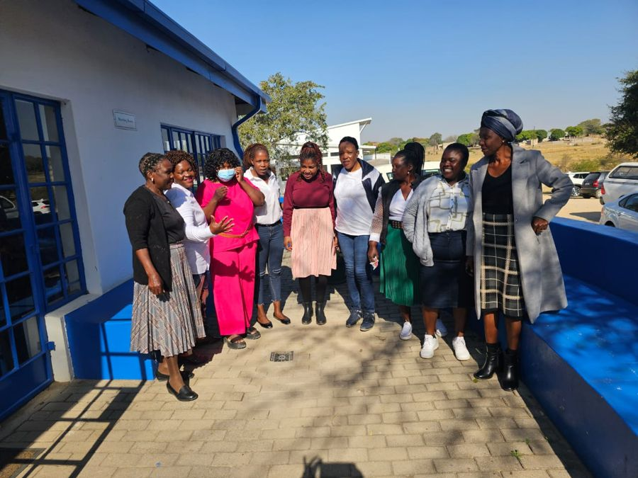
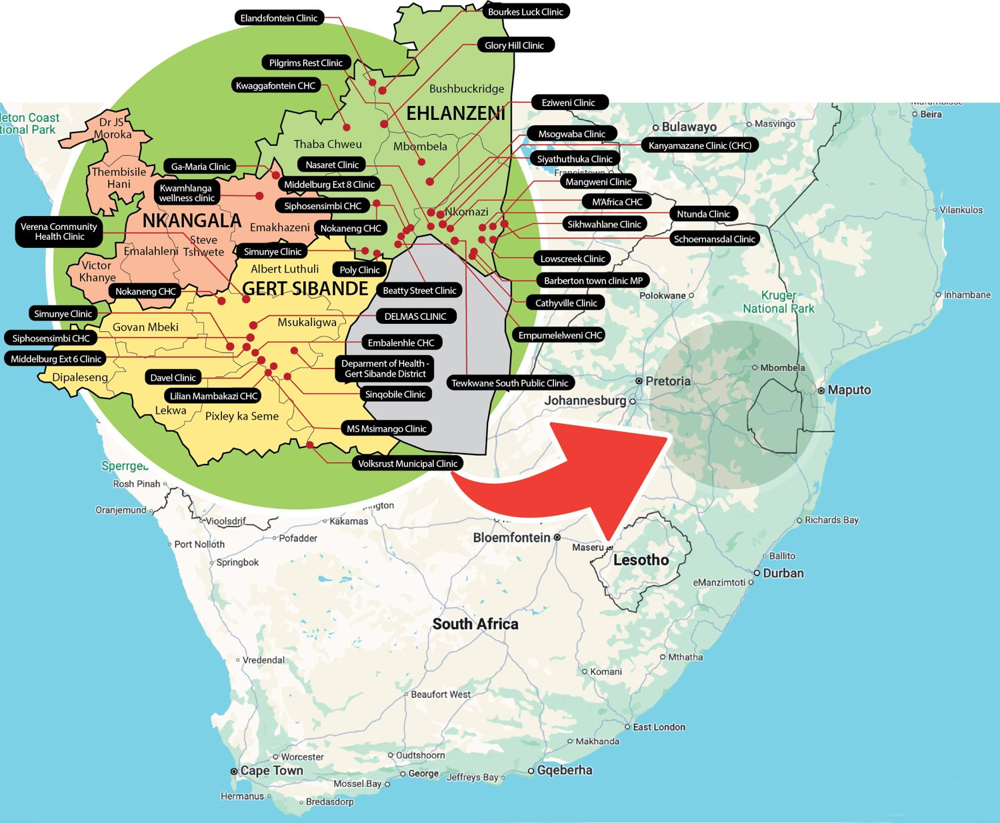

News · September 2024
Creating spaces for peer support: the CHW Platform

The CHW Platform provides a space for community health worker representatives from different community-based organisations to connect with the sub-district focal person for ward-based primary health care outreach teams and with each other — allowing engagement on aspects of common interest and escalation of CHW inputs within the formal health system structures. The trainer-of-trainers project further expands the capacity of CHWs to conduct community engagement, expanding opportunities to understand community needs and address exclusion from the health system, while elevating the role of CHWs within the local health system.
Where the platform reaches

Open the full map of training locations
Caring for the carers
CHWs are at the forefront of primary health care service delivery, acting as the direct link between health service users and providers. During a ‘community café’ session on 29 November 2022 in Bushbuckridge sub-district, attended by six CHWs from community-based organisations contracted by the provincial Department of Health, the focus was the challenges CHWs experience personally and as ‘peer supporters’ within their communities.
With the high level of alcohol and other drug abuse in local communities, many CHWs are directly affected within their own households. CHWs have historically been responsible for the care of individuals with chronic communicable disease, with duties added when the cadre was formalised as ward-based outreach teams; the rise in non-communicable disease has significantly increased their workload, a burden disproportionately affecting poor households. Due to the nature of their work, CHWs work with community members at an intimate level, entrusted with personal and health information, and many still provide personal care services — cleaning, bathing the elderly or ill, preparing food — when they identify a need.
This exposure to hardship, ill health, poverty and at times abuse affects the mental health of CHWs, especially when situations feel beyond their control, and there is no system in place for CHWs to debrief or receive counselling. Partly due to this gap, and partly due to their caring nature, many CHWs provide personal support to their peers — support that reflects the concept of Ubuntu, though the lack of formal, structured support still leaves CHWs exposed to unresolved trauma. The cohesion among this cadre is very strong, with several accounts of support provided among themselves and to community members beyond their scope of work, at direct or indirect cost to the individual CHW. The lack of psychological and workplace support for CHWs remains a priority concern, impacting their mental and physical health.